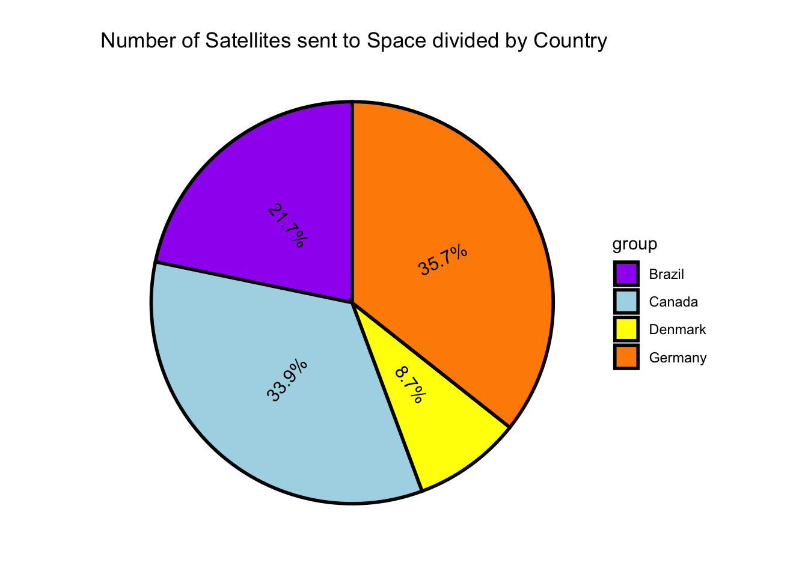

Homework10
Jay Sullivan
2025-04-09
GGPlots
library(ggplot2) # for graphics
library(tidyverse)
library(tidytuesdayR) # for data set
library(ggridges) # for ridges
library(dplyr)
library(tidyr)
library(ggbeeswarm)
library(beeswarm)
library(ggridges)Calling in Datasets
This calls in our data set and assign it a name
tuesdata <- tidytuesdayR::tt_load('2024-04-23')
outer_space_objects <- tuesdata$outer_space_objectsRidgeline Graph
filtered_data <- outer_space_objects %>%
filter(Entity %in% c("Canada", "Brazil", "China", "Denmark","Argentina","Chile","Colombia","Finland","France","Germany"))
# Code above is for cleaning our data so we have 10 countries to observe
#The code below is for the graph
p2 <- ggplot(data=filtered_data) +
aes(x=Year,y=Entity,fill=num_objects) +
ggridges::geom_density_ridges(color="black",fill="lightblue") +
ggridges::theme_ridges(font_size = 14,
font_family = "Times New Roman",
line_size = 0.5,
grid = TRUE,
center_axis_labels = FALSE)
p2
Bee Swarm Graph
filtered_data2 <- outer_space_objects %>%
filter(Entity %in% c("Canada", "Brazil", "China"))
# The code above filters the original data to only have the data of three countries
p3 <- ggplot(data=filtered_data2) +
aes(x=Entity,y=num_objects,color=Entity) +
ggbeeswarm::geom_beeswarm(method = "center",size=1.5) +
scale_color_manual(values = c(
"Canada" = "cornflowerblue", # Makes Canada Blue
"Brazil" = "darkolivegreen3", # Makes Brazil Green
"China" = "darkred" # Makes China Red
)) +
ggridges::theme_ridges(font_size = 14, # Changes font size
font_family = "Times", # changes font to times
line_size = 0.3,
grid = TRUE,
center_axis_labels = FALSE)
# The code above creates the graphp3Waffle Graph
filtered_data2 <- outer_space_objects %>%
filter(Entity %in% c("Canada", "Brazil", "Germany","Denmark"))
p4 <- ggplot(data=filtered_data2) +
aes(fill = Entity, values = num_objects) +
waffle::geom_waffle(n_rows = 8, size = 0.33, colour = "white") +
coord_equal() +
theme_void()p4
Horrible Pie Graph
p5 <- ggpie::ggpie(data=filtered_data2,
group_key="Entity",
count_type="full",
label_info="ratio",
label_type="circle") +
scale_fill_manual(values = c("purple", "lightblue", "yellow", "darkorange"))p5